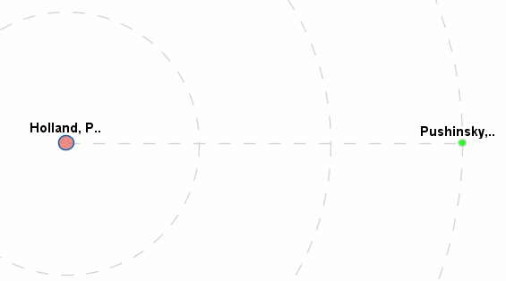
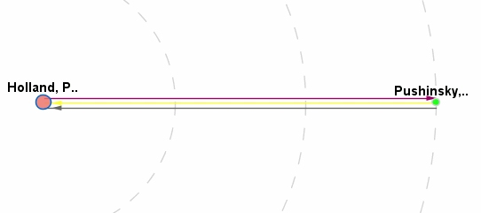
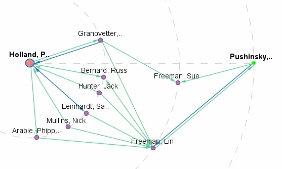
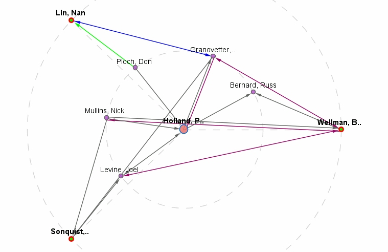
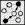

Click the button, a recommendation layout will be displayed similar to this:

The bigger node colored red is the "requestor" of the recommendation, the node colored green is the "recommendation". The dotted circles indicate how many steps from the requestor to the recommendation. The straight dotted line means there is no direct recommended relations, but only not recommended relations between the requestor and the recommendation.
When mouse hovers over the dotted line, the not recommended relations will be displayed as following:

We can see, for this case, there are three direct relations between requestor and the recommendation, but those relations are not recommended. To see the recommended relations between the requestor and the recommendation, hover or click the recommendation node (green node), and you will get the visualization as following.
Click any blank space on the screen and you will be back to the dotted line.

All the paths from requestor to recommendation are by way of intermediary nodes. If you want to show more than one recommendation network on the same screen, just select the recommendation node
you want. See <a href="other.html#Selection">Node Selection and Deselection </a> to learn how to select your desired node(s).

The above shows all the recommended relations for three recommendations at the same screen.
The visualizer also provides a function to see relations which are not recommended, click the  button to do so.
Copyright © 2010, Science of Networks In Communities
Created with the Freeware Edition of HelpNDoc: Full featured multi-format Help generator